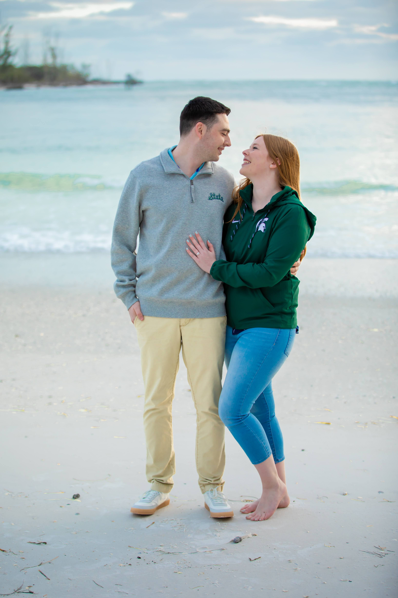
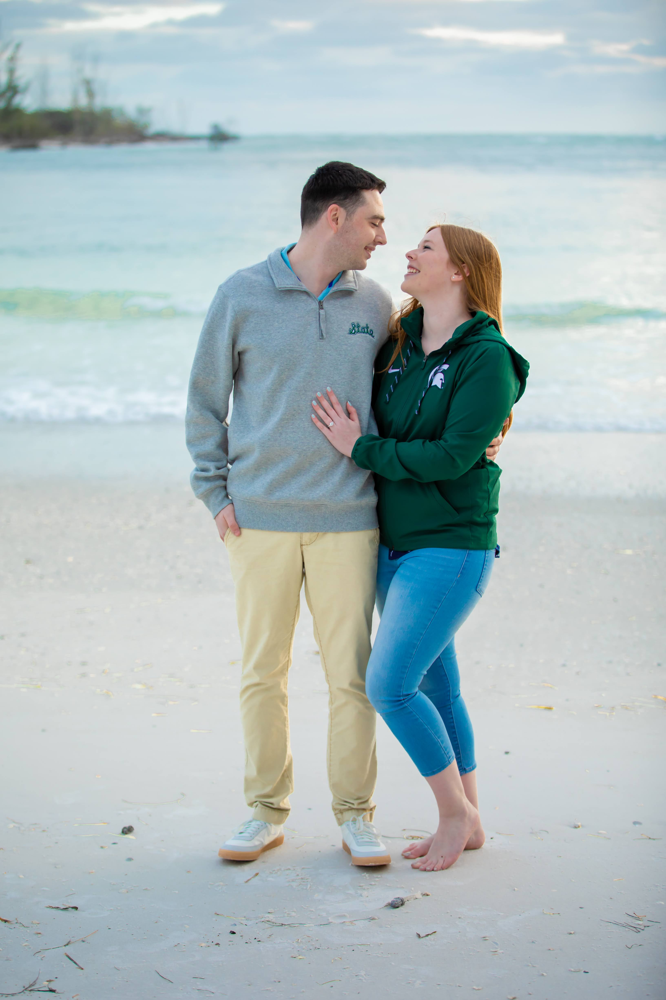
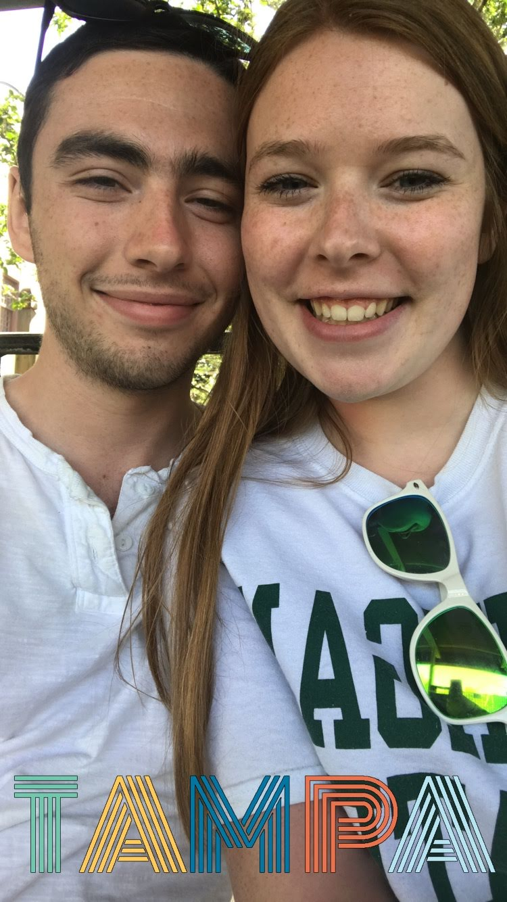
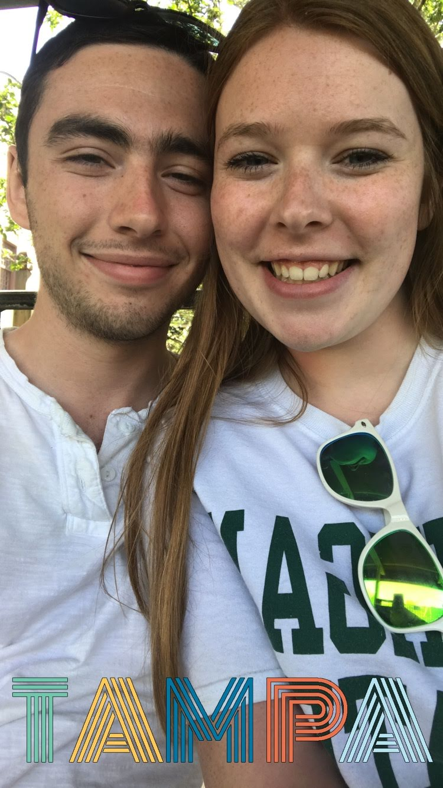

Home Photos RSVP Registry Schedule Accommodations FAQ
 


 

Welcome to our wedding website! We are so happy you’re here because it means you found the place with all of the information and where to RSVP! For those of you on Luke’s side of the family, my name is Sarah and I am the bride! But I didn’t want this to be your typical little blurb about how we met solely written by me, so I’m going to write something and I’m going to have Luke write something as well. This way you can get to know us a little better as individuals and as a couple. I hope he writes something nice because I’m not going to see it until it’s done!
Luke and I met at Michigan State, my favorite place in the whole world. We actually lived on the same floor our freshman year of college and were acquaintances at best. That is, until March Madness came along. If you didn’t know, Luke and I are both a little fanatic when it comes to Michigan State basketball. I’ll never let him live it down that he did not knock on wood when firmly stating that Michigan State would win the game easily in that 2015-16 tournament. Moving into our sophomore year, we both were taking Differential Equations at the same time and quickly became homework buddies. Our friendship grew and we started officially dating on New Year’s Day 2017. His friends became my friends, our lives became each others, and our bond continued to strengthen every day. Luke proposed on October 15, 2020 at Uncle John’s Cider Mill, but I think I was way more nervous than he was! I am thankful everyday for how he takes care of me and loves me. I am so happy to be stepping into this next stage of life with him.
Sarah and I first met during our freshman year at Michigan State. We lived in the same building, and a bunch of people from our floor went on a run together. During the run, Sarah was so incredibly slow. I felt bad for her barely keeping up, and I thought she was cute, so I hung back with her. It turns out Sarah had run track and cross country for years, and was actually a pretty fast runner. She was only hanging back to be nice to the non-runners who came along to try to meet people. Sarah always thinks of other people like that, it’s one of the things I love about her. I still tease her to this day about being slow though. We became friends after that, but we weren’t that close. It wasn’t until a year later we really began spending time together. The fall of our sophomore year we had calculus IV together. That class is not easy, but we helped each other through it. Working on calculus took up a lot of time, and we ended up spending more and more time together. Eventually we were spending almost all of our time together. That winter, Sarah visited me at my parents’ house for New Years Eve. My family was skeptical of me having a female friend stay with us, but I insisted we were just friends, which was true. By New Years Day, Sarah was my girlfriend. The rest is history. My life has gotten better and better every single day that I’ve been with Sarah. I am so incredibly excited to marry her and see what’s in store for us for the rest of our lives. I am so lucky to have such a kind, compassionate, strong, beautiful, intelligent person by my side as we embark on this journey. She’s still slow though.